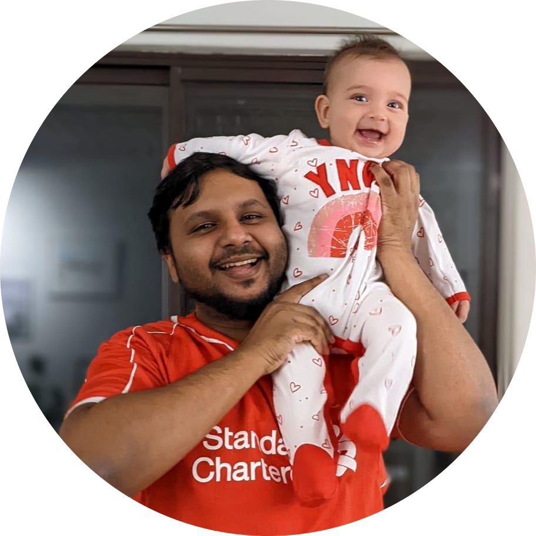

|  |
Ejaz Abdul Hameed
Proud husband and father.
Aspiring software developer and data analyst.
Gamer.
Guitarist.
Liverpool FC fan.
Thanks for checking out my very first HTML site (and resume) built as part of 'The Complete 2022 Web Development Bootcamp' by Angela Yu. My background is in biotechnology and bioinformatics. Through my research and study, I found myself getting more interested in the computer aspect of computational biology more so than the biology. I decided to focus on pursuing that further and ventured into IT. I was exploring pathways and through some advice from people in the industry, I landed a helpdesk role to get some experience into IT pathways. I fast discovered my interests lie in programming and data analytics; not so much in support and networking. Through my bioinformatics journey, I gained intermediate experience in bash, python and R. I am a very capable problem solver and am very interested in developing these programming skills further as a career.
Outside of work, I enjoy spending time with my wife and baby daughter. I am an avid EPL fan and follow Liverpool FC. I inexplicably keep spending money building up a Steam library that I don't have much time for anymore. I enjoy playing guitar and currently play in a cover band with some other dads.
|